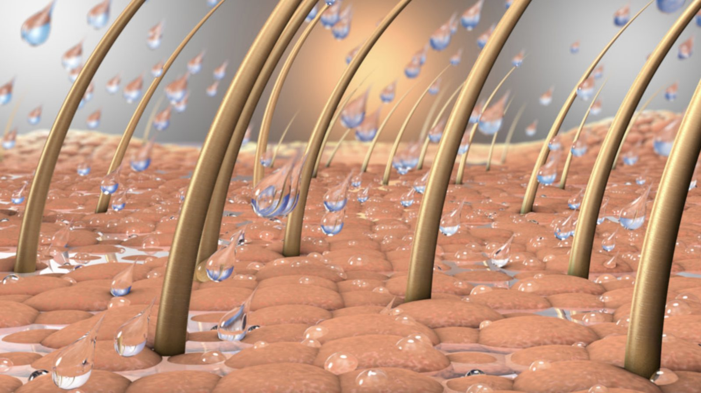

Scalp & Hair Health
Understanding dry scalp
Tightness, itchiness, small white flakes — a dry scalp and dandruff are not always the same thing. What causes it, what to avoid, and how to care for it.
Journal
Straight answers about the Japanese head spa — what it is, what it costs, and what it actually does to your scalp — from a qualified Japanese hairdresser in Southport.

Scalp & Hair Health
Tightness, itchiness, small white flakes — a dry scalp and dandruff are not always the same thing. What causes it, what to avoid, and how to care for it.
Scalp & Hair Health
Shampoos, masks and oils all play a part — but the scalp is the foundation most people overlook. Why healthy-looking hair begins below the surface.
Our Philosophy
The study of the hair and scalp — and why a trichology-informed approach sits at the heart of every treatment we do. What it can, and cannot, tell you.
Our Philosophy
In Japan, a shampoo is never just a shampoo. Twenty years behind the chair on why every rinse, every fingertip and the YUME reclining basin is done with intention.
Home Care
Shampoo and conditioner get all the attention — but a quality oil can nourish both scalp and hair. How we use it in the salon, and at home between visits.
Home Care
No product can permanently fuse a split hair fibre back together — but that doesn't mean nothing can be done. What causes split ends, and how to protect against them.
Scalp & Hair Health
Hair is made of dead cells, so it cannot heal itself. What “repair” products really do, what causes damage, and how to improve it.
Home Care
One targets damage, the other targets dryness. Which one your hair needs, whether to use both, and why the timing on the bottle matters.
Scalp & Hair Health
Dry, dull hair even with good products? The minerals in your shower water build up on the hair and scalp over time. What that does, and what helps.
Scalp & Hair Health
What really happens inside the strand when you use a dryer or straightener, the signs to look for, and the habits that prevent it.
Home Care
Both stay in the hair, but one hydrates and the other repairs. Which one suits your hair, and whether it makes sense to use both.
Scalp & Hair Health
Oil, dead skin, product residue and minerals collect at the root. What buildup does to the follicle, and the signs it has gone too far.
No articles in this category yet — more are on the way.
Reserve Your Time
Ninety minutes is all it takes to understand what everything above is describing.
Book NowJapanese wet head spa Southport, Gold Coast